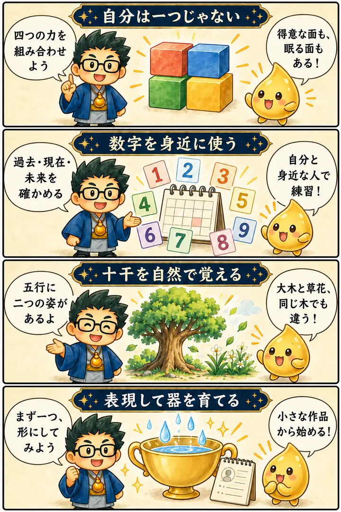

第4期 リアル講座・第1回
四分類・数秘・十干
この回の要約
分類を、自分の強みと次の一歩が見える道具にする。
四分類で複数の力の組み合わせを考え、数秘で自分を振り返り、十干を自然の姿から学んだリアル講座です。後半は「天職と適職」「雨を受ける器」の比喩を通し、知識を実際の表現や行動につなげました。
4コマ漫画でつかむ

タイムスタンプ
時間を押すと、上の動画がその場面から再生されます。
質疑応答
※ 公開中の講座ページの内容を、学習用に整理・再構成しています。吹き出しは逐語引用ではありません。
一つのタイプで、自分を閉じ込めない
12:56から見る ▶自分のタイプが分かったら、それだけを伸ばせばよいのでしょうか？
講義では、強く出ているタイプ以外にも、別の面が眠っていると説明しました。いくつかの力を組み合わせると、自分らしい働き方が見えてきます。
持ち帰り：一番強い面だけでなく、補ってくれる面を二つ探す。
物語の登場人物で、役割をつかむ
12:56から見る ▶四つのタイプを、もっと具体的に思い浮かべたいです。
講義では身近な物語の人物を使い、優しい人、引っ張る人、場を楽しませる人、知恵を働かせる人の関係を読みました。登場人物の組み合わせを、自分の周りの役割を考える手がかりにします。
比喩の読み方：抽象的な分類を、知っている物語の人物に置き換える場面です。同じ特徴も、よく出るか偏って出るかで物語が変わる、という見方が示されました。
持ち帰り：人物の名前を覚えるより、どんな役割を担っているかを見る。
数秘は、旅をして戻ってくる入口
39:28から見る ▶もっと複雑な占いを覚えないと、十分ではない気がします。
講師は数秘を、遠くを旅したあとで家に見つかる「青い鳥」にたとえました。いろいろ学ぶことにも意味があり、戻ったときに基本のよさが分かる、という説明です。
比喩の読み方：幸せを探して遠くへ出たのに、身近なところに見つかるという落差を使った比喩です。学ぶ旅が無駄なのではなく、旅を経たから身近な価値が見える、という意味です。
持ち帰り：新しい知識を増やすだけでなく、最初の道具をもう一度使ってみる。
過去・現在・未来を、混ぜずに読む
48:36から見る ▶誕生数秘の三つの数は、どう使い分けますか？
この講義では、生まれた日、生年月日全体、月と日から出す数字を分け、過去・現在・未来の見方を学びました。11・22・33の扱いも含め、配布資料と同じ計算方法で確かめます。
持ち帰り：数字だけでなく、足した範囲と計算過程を残す。
雨が降っていても、器がなければ受け取れない
1:02:15から見る ▶「自分の器を作る」とは、どういうことなのでしょうか？
講義では、川から水を引く働き方と、雨を器で受ける働き方を対比しました。表現して初めて自分の器に気づくという比喩です。復習では、自分の強みを一枚の作品や短い鑑定メモにします。
比喩の読み方：雨で濡れているのに喉が渇く、という食い違いが比喩の肝です。「機会がない」のか「受け取る形がない」のかを、笑いとともに考える場面です。
持ち帰り：受け取れるものを増やしたいなら、まず表に出す形を一つ作る。
同じ木でも、大木と草花は違う
1:14:00から見る ▶五行が分かれば、十干も同じように読めますか？
木には大木と草花、火には太陽と灯火というように、それぞれ二つの姿があります。自然の絵と言葉を対にして覚え、自分の特徴に合う出し方を考えます。
持ち帰り：甲から癸までを、自然の姿と一緒に一巡して説明する。
覚えておきたいこと
- 四分類は一人を一つの型へ固定するためではなく、複数の力を読む手がかり。
- 数字の計算と意味の解釈を分け、同じ方法で比べる。
- 基本の数秘は、学びを重ねた後にも戻れる道具になる。
- 天職と適職、雨と川の話は、講師が働き方を説明するための比喩。
- 五行のそれぞれに陰陽があり、十干は自然の二つの姿で覚える。
- 一つの特徴で決めつけず、十二支との組み合わせや本人の話へ戻る。
復習ポイント
講義内の占術上の説明・時代の読み・象徴的な解釈は、講師の見立てです。客観的な事実や将来を保証するものではありません。